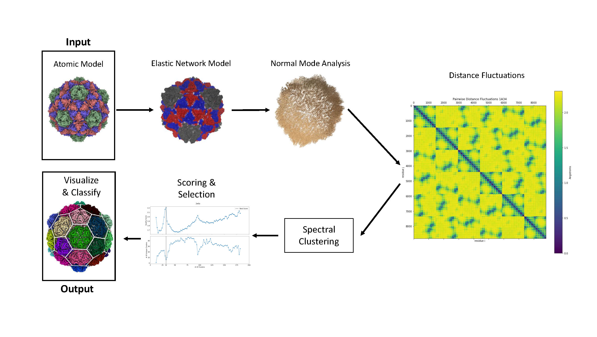
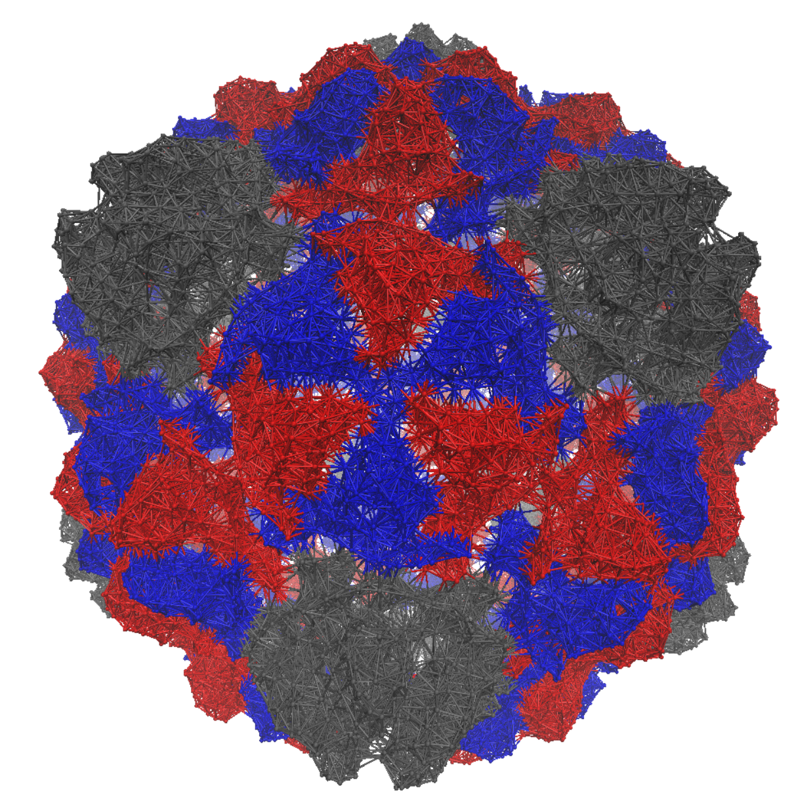
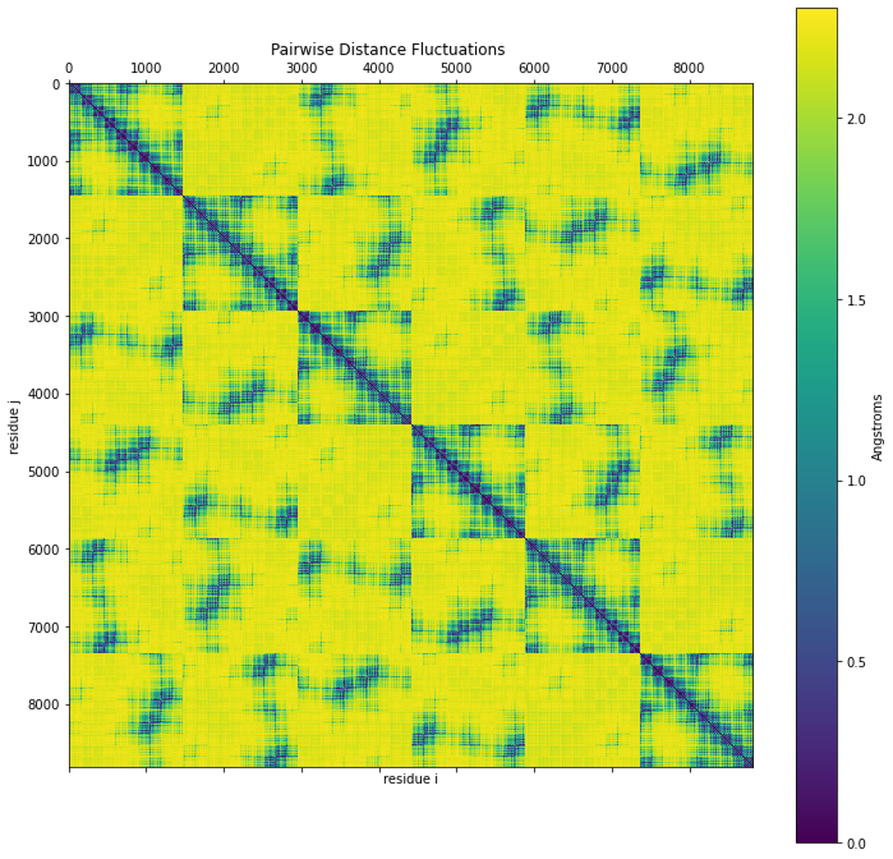
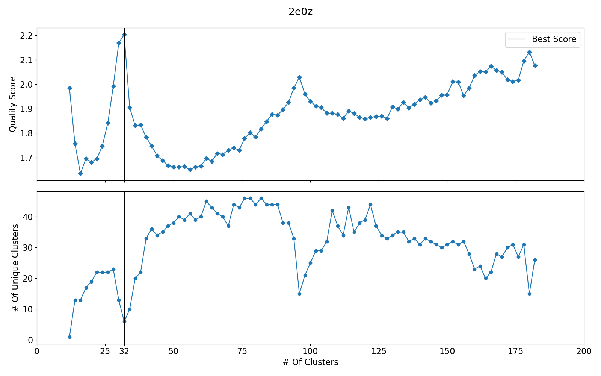
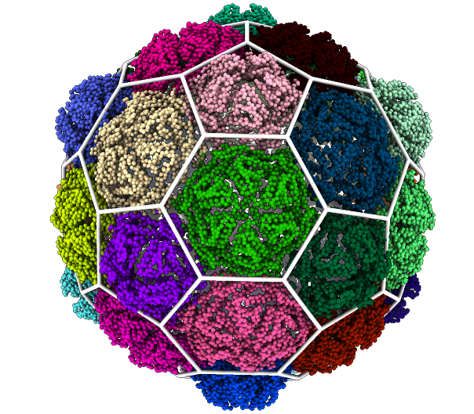

2. Methods
2.1 Data Acquisition
All atomic models are in PDB format and are, with few exceptions, from the RCSB Protein Databank. We collected tailed phage models by searching the RCSB for models from the families Myoviridae, Siphoviridae, and Podoviridae, and filtering the results to include only icosahedrally symmetric models. From these we selected only mature capsid models with resolutions below 5Å if possible. We selected capsids with T numbers of 7 or 13, to minimize computational difficulty.
|  |
|---|
| Figure 1: Outline of the workflow and techniques used for our methods. |
2.2 Normal Mode Analysis
Normal Mode Analysis (NMA) is a technique for analyzing the near-equilibrium dynamics of a physical system(Goldstein et al., 2001). It assumes the system is held in an equilibrium conformation by approximately harmonic potentials, with small thermal fluctuations as the only source of motion. The harmonic approximation of the potential allows one to solve analytically the equations of motion in the vicinity of the equilibrium, yielding the systems normal modes of vibration. Physically these normal modes represent directions of deformation that incur minimal increases in energy.(missing reference) The squared frequency of each mode determines the curvature of energy increase along that mode, meaning lower frequency modes are more accessible by thermal fluctutaions. NMA results only hold in the limit of small fluctuations, as the difference between the approximate and real potential grows with distance from the equilibrium. (Bahar et al., 2010) NMA won’t represent specific local constraints. Typically rigid or constrained elements of a molecule will not be considered in the harmonic approximation and will instead move freely. NMA is thus best used to determine large-scale dynamics independent local interactions. In fact, NMA results are primarily properties of the 3D shape of the system, not its specific interactions. (Bahar et al., 2010)
The requirement that the system be in equilibrium means that some potentials will have to undergo energy minimization prior to performing NMA. (Bauer et al., 2019) Energy minimization can be a very costly step depending on the form of the underlying potential. It can also negatively impact the accuracy of the NMA if the system doesn’t reach a precise minimum. It is then useful that some simpler models, such as the Elastic Network Models discussed in section 2.3, avoid this step since the initial conformation is explicitly the equilibrium.
The mathematical formulation of NMA begins by considering a taylor series of the potential energy about the equilibrium.
\[\begin{equation} V(\vec{q}) = V(\vec{q^0}) + \sum_{i}\Delta q_i \frac{\partial V}{\partial q_i }|_{q=q^0} + 1/2 \sum_{i,j}\Delta q_i \Delta q_j \frac{\partial^2 V}{\partial q_i \partial q_j }|_{q=q^0} + \dots \end{equation}\]Where \(\vec{q}\) is the state vector of the entire system, i.e., a 1D vector containing all system coordinates (cartesian coordinates, dihedral angles, etc.). The first and second terms of Eq. (1) are zero in any equilibrium conformation. Truncating the remaining terms gives a second-order (harmonic) approximation of the potential about the equilibrium. Defining a matrix \(H\), with elements \(H_{ij}\) being the second partial derivatives in eq. 1 allows for the energy to be calculated as a matrix-vector product.
\[\begin{equation} H_{ij} = (\frac{\partial^2 V}{\partial q_i \partial q_j})|_{q=q^0} \end{equation}\] \[\begin{equation} V(\Delta \vec{q}) = \frac{1}{2} \Delta \vec{q}^T \mathbf{H} \Delta \vec{q} \end{equation}\]Where \(\Delta \vec{q}\) is the deviation from the equilibrium conformation \(\vec{q}^0\). Our equation of motion may then be written using the Hessian as follows:
\[\begin{equation} \mathbf{M} \frac{d^2 \Delta \vec{q}}{dt^2} + \mathbf{H} \Delta \vec{q} = 0 \end{equation}\]Where the matrix \(\mathbf{M}\) is diagonal matrix containing the masses associated with each degree of freedom. By assuming solutions of the form \(\Delta \vec{q_k}(t) = \vec{v_k}(t) = \vec{a}_{k} cos(\omega_k t + \delta_k)\), where \(\omega_k\) and \(\delta_k\) are the frequency and phase of mode \(k\), and \(\vec{a}_{k}\) is a vector containing the amplitudes for each coordinate. Substituting this into Eq. 4 transforms the equation of motion into a generalized eigenvalue problem, with the squared frequencies as the eigenvalues and the normal modes as the eigenvectors.
\[\begin{equation} \mathbf{H} \vec{v_k} = \omega_k^2 \mathbf{M} \vec{v_k} \end{equation}\]Calculating all eigenvectors and eigenvalues of the system would be prohibitive. It would be preferable only to calculate a significant subset. Thermodynamically, we expect motion along higher energy modes to be less likely. The contribution of an individual mode is inversely proportional to its frequency.
\[\begin{equation} V(\vec{v_k}) = \frac{1}{2} \Delta \vec{v_k}^T \mathbf{H} \Delta \vec{v_k} = \frac{\omega_k^2}{2} \end{equation}\]As such, when applying NMA, one typically calculates only the \(n_k\) lowest frequency modes and considers only vibration along those modes.
A valuable application of NMA is determining the cross-correlations between motion in each degree of freedom. These correlations represent the statistical overlap between these motions. A high correlation means the two degrees often fluctuate together. The covariance matrix \(\mathbf{C}_{ij}\) that has these cross-correlations as its entries. One can construct it from the inverse of the Hessian matrix in the following manner.
\[\begin{equation} C_{ij} = \langle \Delta q_i \Delta q_j \rangle = k_b T * (\mathbf{H}^{-1})_{ij} \end{equation}\]In the specific case of a model using cartesian coordinates, such as the Anisotropic Network model, the Hessian and its inverse are organized into \(3 \times 3\) blocks for each element of the system. The mean square fluctuations of an element can then be calculated by taking the trace of its diagonal block.
\[\begin{equation} C_{ii} = \langle (\Delta q_i)^2 \rangle = k_b T * tr(\mathbf{H}^{-1}_{ii}) \end{equation}\]Where in this case \(\mathbf{H}_{ii}\) is a \(3 \times 3\) sublock corresponding to element i. These fluctuations are the most common way of validating NMA results since they are readily comparable to Debye-Waller factors (B-factors). B-factors represent the spread of an electron density and in the case of X-rax crystallography are measured directly for each atom in a pdb. B-factors can be related to mean square fluctuations by the relation \(B = 8 \pi^2 \langle \Delta x^2 \rangle\). (Eyal et al., 2006) (Kaur et al., 2021) This makes for a convenient way to validate results and determine the optimal parameters in one’s choice of model.
With this mathematical formulation of NMA we can now select a model with a potential to use in Eq. 1.
 |
|---|
| Figure 2: An animation showing vibration along one of the normal modes |
2.3 The Anisotropic Network Model
Elastic Network Models (ENMs) are among the most versatile models for describing large scale protein dynamics. They represent proteins as a network of masses connected to their neighbors by springs. They require very few parameters to fully describe the system, and are easily coarse-grained to any level depending on computational needs. We select the Anisotropic Network Model (ANM), for its ability to describe normal mode directions in 3D. This property of ANM allows applications where it is used to generate alternate conformations by deforming a molecule along the normal modes. (Eyal et al., 2015)
To simplify computations the full atomic model can be transformed into an Elastic Network by coarse graining to the level of protein residues. We select the alpha-carbon atoms as representative centroids for each protein residue. Rather than connect all residues, only residues within a cutoff distance of each other are connected with springs. This is expressed through the connectivity matrix \(\mathbf{\Gamma}\). (Eyal et al., 2006)
\[\begin{equation} \Gamma_{ij} = \biggr \{ \begin{array}{ll} \gamma, & R_{ij} \leq r_c \\ 0, & R_{ij} > r_c \end{array} \end{equation}\]Where \(\gamma\) is the spring constant, \(r_c\) is the cutoff distance, and \(R_{ij}\) is the distance between residues i and j. The choice of spring constant typically has little impact on vibrational modes which result from the shape and connectivity of the network.(Bahar et al., 2010)
Optimal spring constants are found in the range of \(1.0 \pm 0.5 \frac{kcal}{mol * Å^2}\)(Doruker et al., 2002) and the cutoff distance is typically \(15Å\).(Eyal et al., 2015) Since the spring constant doesn’t significantly affect results it is typically set to exactly 1.0 to simplify calculations.
Using a cuttof of \(15Å\) in Eq. (9) means the majority of the entries in the connectivity matrix are 0 as most capsids are significantly larger than the cutoff distance. This allows a significant simplification of computations through the use of sparse matrices.
The potential of ANM can be written using the connectivity matrix and is the sum of spring potentials between each pair of connected residues.
\[\begin{equation} V(\vec{x}) = \frac{1}{2} \sum_{i|i \neq j} \Gamma_{ij} (||\vec{x}_i - \vec{x}_j|| - ||\vec{x}^0_i - \vec{x}^0_j||)^2 \end{equation}\]Where \(\vec{x}_i\) is the coordinate vector of residue i and \(\vec{x}_i^0\) is the equilibrium coordinate vector for that residue. This potential can be used to construct our Hessian and perform NMA on our network.
|  |
|---|
| Figure 3: A representation of an Elastic Network Model using the example of a Pyrococcus Furiosus VLP. (pbd: 2e0z) |
The ANM Hessian can be derived by placing our potential from Eq. (10) into Eq. (2). Because ANM uses three dimensional coordinates the Hessian of an ANM with \(N\) residues is a \(3N \times 3N\) block matrix that consists of a \(3 \times 3\) block for each residue, for a total of \(N \times N\) blocks. The off-diagonal blocks have the following form.
\[\begin{equation} \mathbf{H}_{ij} = \frac{\textbf{$\Gamma$}_{ij}}{R_{ij}^2} \vec{r}_{ij} \otimes \vec{r}_{ij} \end{equation}\]Where \(\vec{r}_{ij}\) is the distance vector between residues, \(R_{ij}^2\) is the distance between residues, and \(\otimes\) denotes the outer product of two vectors yielding a \(3 \times 3\) matrix. The diagonal blocks of our Hessian Matrix are then the sum of all other blocks in that row.
\[\begin{equation} \mathbf{H}_{ii} = - \sum_{i|i \neq j} \mathbf{H}_{ij} \end{equation}\]In the case where all masses and spring constant are uniform they reduce to a scalar multiplication which can let us rewrite Equation (5) extracting the spring constant and mass from the matrices.
\[\begin{equation} \gamma \mathbf{H} \vec{v_k} = m \omega^2 \vec{v_k} \end{equation}\]As a result they can be ignored in the eigenvalue problem as they merely scale the resulting frequencies \(\omega^2_* = \frac{\gamma}{m} \omega^2\). A physical value for the frequencies can be extracted from a choice of mass that reflects our level of coarse-graining.
When validating the results of NMA using ANM, the formula to compare with B-factors takes the following form.
\[\begin{equation} B_i = \frac{8 \pi^2 k_b T }{3 \gamma} tr(\mathbf{H}^{-1}_{ii}) \end{equation}\]The pairwise correlations in Equation (6) can be used to approximate fluctuations in distance between. (missing reference)
\[\begin{equation} f_{ij}^2 = Var(R^{2}_{ij}) = \mathbf{C}_{ii} + \mathbf{C}_{jj} - 2 \mathbf{C}_{ij} \end{equation}\]The Hessian matrix is, however, singular and cannot be exactly inverted, having exactly 6 zero eigenvalues. We can instead construct a pseudo-inverse from the eigenvectors/normal modes.
\[\begin{equation} \mathbf{H}^{-1} = \sum_{k=1}^{3N - 6} \frac{1}{\omega_k^2} \vec{v_k} \otimes \vec{v_k} \end{equation}\]|  |
|---|
| Figure 4: A matrix of pairwise distance fluctuations |
Determining Optimal Spring Constant
When fitting ANM predictions to b-factors we fit a scaling factor \(B_i = \alpha tr(\mathbf{H}^{-1}_{ii})\) and then extract the value of the spring constant.
\[\begin{equation} \gamma = \frac{8 \pi^2 k_B T}{3 \alpha} \end{equation}\]2.4 Quasi-Rigid Subdivisions
If capsomers represent mechanical or assembly units of the capsid, we would expect them to be relatively rigid. Rigidity is thus the measure we will use to separate the residues into rigid subunits. Rigid structures have zero fluctuations in distance between any elements of the structure, but realistically there are some internal fluctuations. Thus the method aims to minimize distance fluctuations, as defined in Eq. (15), a metric called quasi-rigidity. This metric was previously used to identify rigid domains in protein structures, including viral capsids. These methods were, however, primarily targeted towards smaller protein structures. (missing reference)
Once we have used NMA to get the pairwise distance fluctuations between all residues of a capsid we need to select an algorithm or heuristic that can subdivide our network into optimally quasi-rigid subunits. There exist many algorithms to identify optimal clusterings of data, but when dealing with large, sparse datasets, Spectral Clustering is a robust and computationally efficient algorithm.
Spectral Clustering
Spectral clustering has its roots in graph theory, and can be formulated as an approximation to the Normalized Graph Cut problem.(von Luxburg, 2007) An advantage that this provides over distance based clustering methods is that clusters can be arbitrary shapes. Spectral clustering is also based on similarity rather than distance, which can be useful simplify calculations. Since the similarity of distant elements approach 0, approximating them as exactly 0 allows one to use a sparse similarity matrix. To make use of the technique however, we must first transform our distance fluctuations into a graph. Specifically the Laplacian Matrix of a graph, which represents the action of the Discrete Laplace Operator on the graph.
First we transform our measure of dissimilarity, distance fluctuations, into a measure of similarity using a Gaussian Weighting Function. This transformation is chosen because it emphasizes local neighborhoods of rigidity, in a similar manner to a nearest neighbor graph, and because large fluctuations approach 0 very quickly. Residues that are not connected by springs are assumed to have zero similarity in order to preserve the sparsity of the matrix and reduce memory requirements.
\[\begin{equation} S_{i,j} = \Gamma_{ij} e^{-f_{i,j}^2 / 2 \bar{f}^2} \end{equation}\]Where \(\bar{f}^2\) is the average squared distance fluctuation between connected residues. This similarity matrix can now be thought of as the adjacency matrix of a weighted graph. Spectral graph techniques require the Laplacian matrix of a graph. The Laplacian matrix represents the action of a discrete laplace operator on a graph. One can transform a similarity matrix into a Laplacian matrix, specifically the Symmetric Normalized Laplacian, with the following identity.
\[\begin{equation} \mathbf{L} = \mathbf{I} - \mathbf{D}^{-1/2} \mathbf{S} \mathbf{D}^{-1/2} \end{equation}\]Where \(D\) is a diagonal matrix whose entries are the number of neighbors of each node and \(I\) is the identity matrix.
Laplacian Embedding
Finding an optimal subdivision of our graph into \(n_c\) clusters requires the lowest \(n_c\) eigenvalues and eigenvectors of the Laplacian matrix. These eigenvectors are useful because they each represent an approximate partitioning of the graph into two components. (von Luxburg, 2007) In the ideal case of well separated clusters, each of these eigenvectors would represent membership in a single cluster. In practice this is rarely ever the case, but the eigenvectors can be used to build a \(n_c\) dimensional space where we can use a more generic clustering algorithm such as k-means to determine cluster membership.
Clustering Embedded Points
If \(\Lambda\) is a matrix with the eigenvectors of the laplacian matrix as its columns, its rows now represent points in an \(n_c\) dimensional space. Normalizing these points and then clustering them will then yield our final set of clusters.
It should not be necessary to use a sophisticated clustering scheme at this step as the spectral embedding should have done most of the work. K-means is chosen to perform the final clustering for its simplicity.
2.5 Scoring & Selection
Since our methods take the number of clusters as input, we need to compare results across different numbers of clusters and select the optimal clustering. This requires the use of a scoring metric. We select a scoring metric that measures the compactness and separation of our clusters. This score is calculated in the eigenvector space for convenience, but the score could be applied directly to the distance fluctuations.
\[\begin{equation} \rho(Q) = \frac{1}{N} \sum_{i=1}^N \frac{\delta_{i,c_0}}{\delta_{i,c_1}} \end{equation}\]Where \(N\) is the number of residues, \(\delta_{i,c_0}\) is the distance between a residue and the cluster centroid it belongs to (compactness), and \(\delta_{i,c_1}\) is the distance from a residue to the next nearest cluster (separation).
|  |
|---|
| Figure 5: Comparative plots for Pyrococcus Furiosus VLP. The first graph is the quality score from Eq. (19). The second plot is of the number of clusters that contain a unique number of residues. This is an indicator of whether clusters are uniform. |
2.6 Classification & Visualization
The labels assigned to each residue allow us to visualize the results of the clustering in ChimeraX. We color each residue based on its cluster label and then overlay a 3d structure with a lattice that fits the clustering most accurately.
|  |
|---|
| Figure 6: The results of visualizing Pyrococcus Furiosus VLP |
References
- Goldstein, H., Poole, C. P., & Safko, J. L. (2001). Classical Mechanics (3rd ed.). Pearson.
- Bahar, I., Lezon, T. R., Bakan, A., & Shrivastava, I. H. (2010). Normal Mode Analysis of Biomolecular Structures: Functional Mechanisms of Membrane Proteins. Chemical Reviews, 110(3), 1463–1497. https://doi.org/10.1021/cr900095e
- Bauer, J. A., Pavlović, J., & Bauerová-Hlinková, V. (2019). Normal Mode Analysis as a Routine Part of a Structural Investigation. Molecules (Basel, Switzerland), 24(18), 3293. https://doi.org/10.3390/molecules24183293
- Eyal, E., Yang, L.-W., & Bahar, I. (2006). Anisotropic network model: systematic evaluation and a new web interface. Bioinformatics, 22(21), 2619–2627. https://doi.org/10.1093/bioinformatics/btl448
- Kaur, S., Gomez-Blanco, J., Khalifa, A. A. Z., Adinarayanan, S., Sanchez-Garcia, R., Wrapp, D., McLellan, J., Bui, K. H., & Vargas, J. (2021). Local computational methods to improve the interpretability and analysis of cryo-EM maps. Microscopy and Microanalysis, 27(S1), 76–78. https://doi.org/10.1017/S1431927621000891
- Eyal, E., Lum, G., & Bahar, I. (2015). The anisotropic network model web server at 2015 (ANM 2.0). Bioinformatics (Oxford, England), 31(9), 1487–1489. https://doi.org/10.1093/bioinformatics/btu847
- Doruker, P., Jernigan, R. L., & Bahar, I. (2002). Dynamics of large proteins through hierarchical levels of coarse-grained structures. Journal of Computational Chemistry, 23(1), 119–127. https://doi.org/https://doi.org/10.1002/jcc.1160
- von Luxburg, U. (2007). A tutorial on spectral clustering. Statistics and Computing, 17(4), 395–416. https://doi.org/10.1007/s11222-007-9033-z